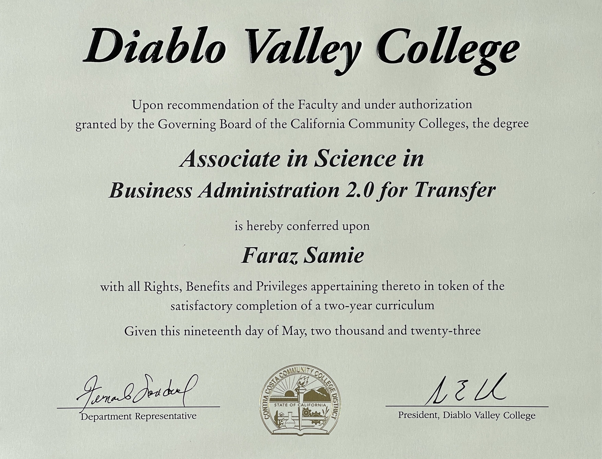
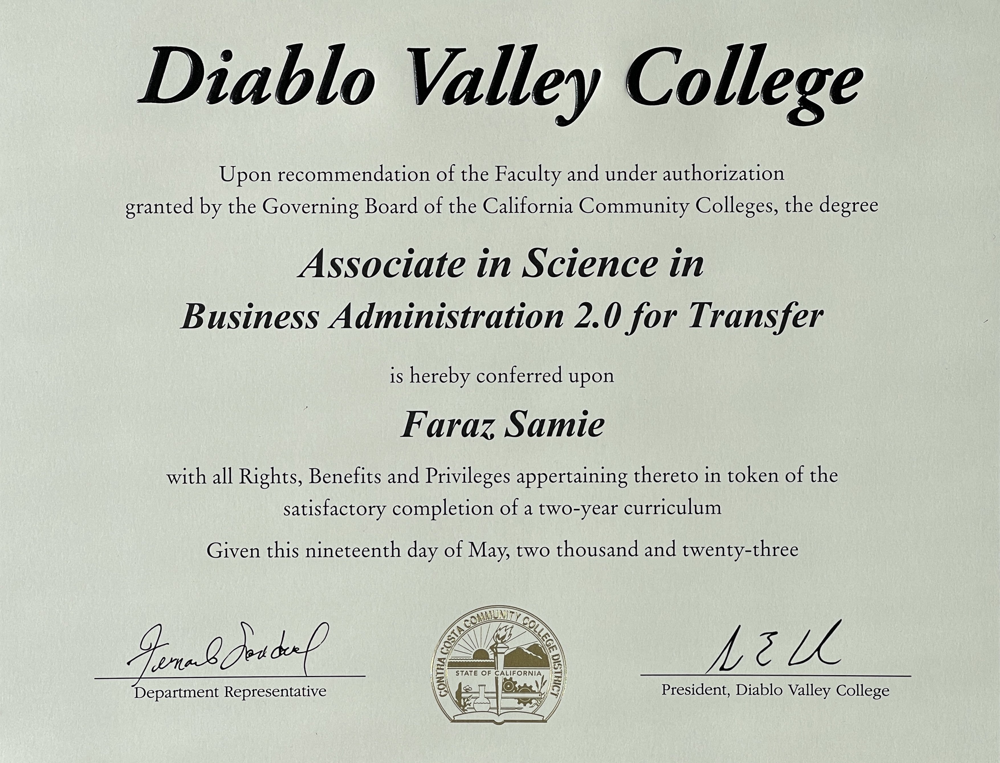

At UC San Diego, I'm involved in a rigorous Economic and Business program offered jointly by a world ranked Economics Department and the newly built Rady School of Management - UC San Diego's Business School. In addition to pursing a Economics degree, I'm also attaining a minor in Technology, Innovation, and Supply Chain Management. This interdisciplinary significantly deepens my understanding of Economic theories and contemporary business practices in demanded industries: Finance, Technology, and Healthcare. The practical applications and rigorous coursework across these disciplines are advancing my analytical, critical, and problem-solving skills alongside my strategic thinking. Whether learning how to create mathematical equations to represent consumer demand or diving deep into business cases that signify the importance of ethical businesses, my time at UC San Diego is deeping my understanding in the evolving landscape of Business, Economics, and Technology.
-
Relevant Coursework:
- Econometrics Series
- Microeconomics Series
- Business Ethics
- Project Management
- Supply Chain Student Organizations:
- Hedge Fund Club
- Investors Club
- Alpha Lambda Mu
- Muslim Student Orgaanization
- Pakistan Student Orgaanization
- Undergraduate Economics Society
 
